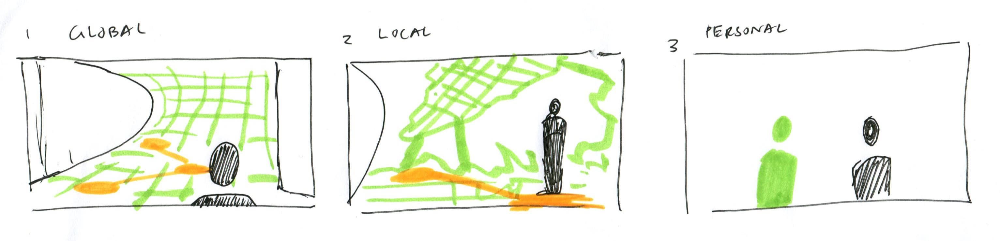
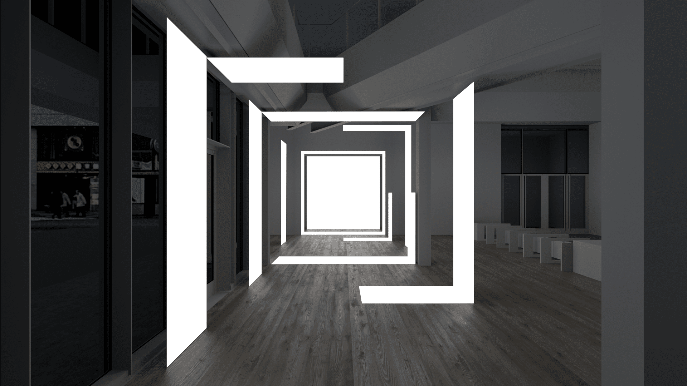
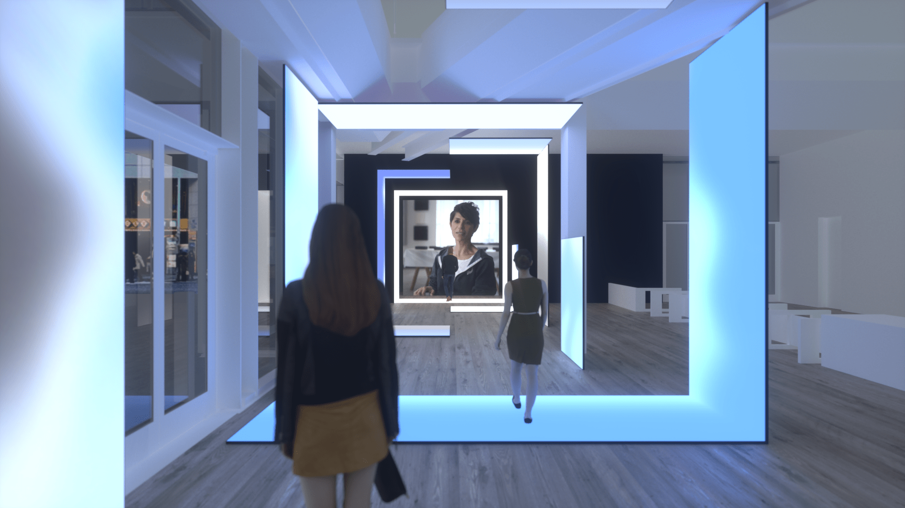
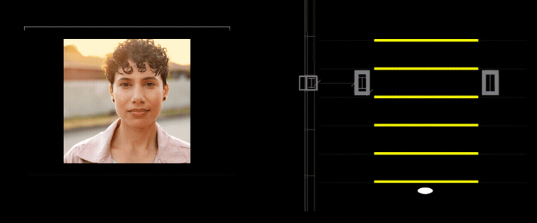
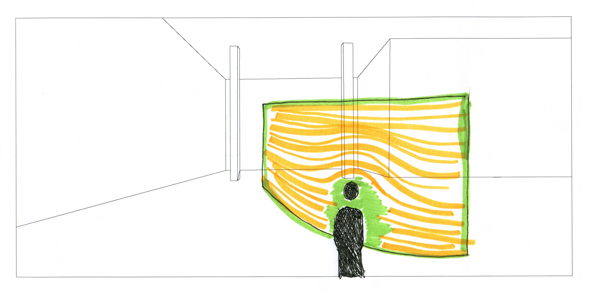
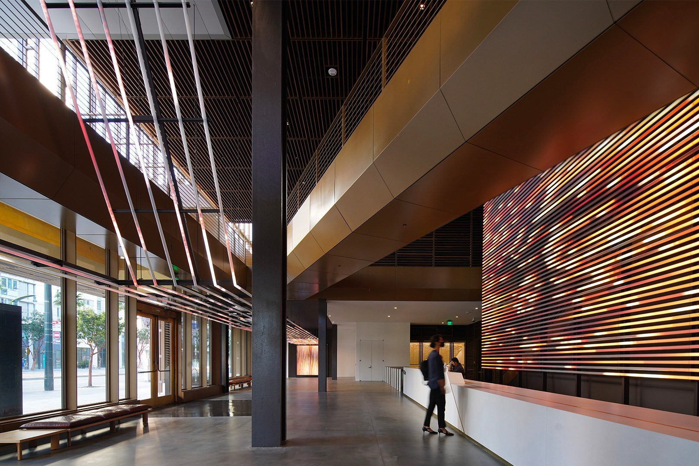

Uber Stream Lobby Experience
Experience
2018–2021
Background
Uber wanted to utilize their new global campus as a high-value setting to galvanize the company’s mission and culture, and help employees connect their contributions to positive, real-world impact.
Project Overview
I worked with HUSH Studios in Brooklyn, NY to create an interactive lobby experience in Uber’s new headquarters in Mission Bay, San Francisco. They wanted to put visitors through a journey into the scale and scope of Uber's story.
My Role
Working with HUSH Studios, I was the primary designer on this project — responsible for conceptualizing the visual language and motion graphics of the LED installation. I translated Uber's brand narrative into fluid, data-driven animations across three proximity-based zones, then scaled the visual system to Uber talent hubs in Dallas, Amsterdam, Chicago, and Mexico City.
Uber's new Mission Bay Headquarters features a large lobby space that was perfect for an experiential intervention. Uber wanted visitors and employees to be inspired by the brand's story and vision for the present and future of transit.

Zoom: Proximity Based Storytelling
The first idea that we floated to Uber involved a proximal experience. Visitors would be enticed to move deeper into the experiential space since their movement directly affected the visual content within the activation.
Uber’s mission statement is stated: to bring transportation — for everyone, everywhere. We looked to break down the story into three distinct parts in order to illustrate the vast and varying verticals, interactions, and opportunities that Uber facilitates.
Uber’s mission statement is stated: to bring transportation — for everyone, everywhere. We looked to break down the story into three distinct parts in order to illustrate the vast and varying verticals, interactions, and opportunities that Uber facilitates.

The three zones are sketched over architectural renders of the Uber HQ lobby space.
Visitors are prompted to traverse between the three stages of the Uber narrative. As they moved closer, the story would transform from a global perspective to a regional view, all the way down to a personal driver partner story.
Visitors are prompted to traverse between the three stages of the Uber narrative. As they moved closer, the story would transform from a global perspective to a regional view, all the way down to a personal driver partner story.



Zone 1: Passive moments
The overall gesture within the space is taken in upon first entering the lobby. Content exists in the abstract - but a clear connection between architecture, technology, and storytelling is made evident.
The overall gesture within the space is taken in upon first entering the lobby. Content exists in the abstract - but a clear connection between architecture, technology, and storytelling is made evident.

Zone 2: Reactive moments
Proximity based reaction creates a constant sense of motion through the space as individuals pass by areas of content that content is pushed continuously throughout the space.
Proximity based reaction creates a constant sense of motion through the space as individuals pass by areas of content that content is pushed continuously throughout the space.

Zone 3: Approach
Moving forward in the space begins to push content further out into the installations, revealing the next story available to be seen. This reactive mode can only be seen when the space is empty and users enter for the first time.
Moving forward in the space begins to push content further out into the installations, revealing the next story available to be seen. This reactive mode can only be seen when the space is empty and users enter for the first time.

Stream: A Coursing River
The second idea we had involved creating an experience which utilised fluidity as a visual metaphor to convey the complex network of movement, journeys, and pathways that Uber facilitates.

Visitors would walk towards the experience, trigger the interactive LED panels, and activate Uber’s content. Depending on where they are relative to the experience guests would access driver partner stories, learn about Uber’s latest mobility projects, or view the constant stream of Uber’s many data points spanning across the globe.


The team felt this idea carried the most potential since water, fluidity, and liquid could be conveyed in such varied ways. That and the fact that the concept evoked the most amount of movement meant that Stream was the idea that Uber decided to go ahead with.
Using Uber's wealth of content, we excitingly began to experiment with the various materials and digital manifestations that could be communicated within the lobby space.
Using Uber's wealth of content, we excitingly began to experiment with the various materials and digital manifestations that could be communicated within the lobby space.
Combining Concepts
Following reviews with Uber, the decision was to combine the best of both Zoom and Stream concepts to create a dynamic and fluid interactive experience.
Our architectural designers decided we should cover the lobby space with LED powered tubes. The tubes allowed for text and image content to flow freely through the space in varying fidelities.
Our architectural designers decided we should cover the lobby space with LED powered tubes. The tubes allowed for text and image content to flow freely through the space in varying fidelities.

Though the LED tubes were rigid, we wanted the content within to behave like a fluid. Content would come in from one end of the lobby to the other—beginning as loose particles that then coalesce to form text or images.
This composition created a compelling effect that translated well for both abstract moving patterns and higher fidelity video.
This composition created a compelling effect that translated well for both abstract moving patterns and higher fidelity video.


Final Outcome
The Stream’s physical hardware and front-end visualization systems were designed for productization, modularity, and scalability. Following the deployment of The Stream in San Francisco, we scaled the work to Uber talent hubs in Dallas, Amsterdam, Chicago, and Mexico City.
This system allows operations teams in Uber’s headquarters to distribute and evolve core storytelling across offices in real-time, encouraging a deep connection between global employees and the universal brand mission.
This system allows operations teams in Uber’s headquarters to distribute and evolve core storytelling across offices in real-time, encouraging a deep connection between global employees and the universal brand mission.
